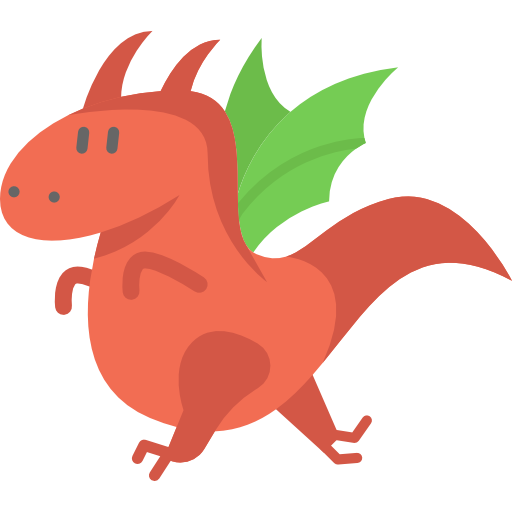

Projeto Dragão
Com a pandemia, as redes sociais tornaram-se veículos de divulgação e comunicação ainda mais importantes para as organizações.
O PET valoriza muito o contato com a comunidade, então manter as redes sociais atualizadas e alimentá-las com o desenvolvimento do grupo tornou-se fundamental.
O Projeto Dração foi criado no final de outubro de 2020 pelas petianas Graciela e Victória com o objetivo de reviver as redes sociais do PET Computação. O caçulinha da família veio como uma forma de organizar e criar mais postagens e melhorar a interação do grupo com toda comunidade.
Responsáveis: Bruno Zimmermann, Heric Rodrigues e Victória Duarte
Eixo: interação
Status: projeto permanente
Linguagens / Ferramentas usadas: Canva e Photoshop